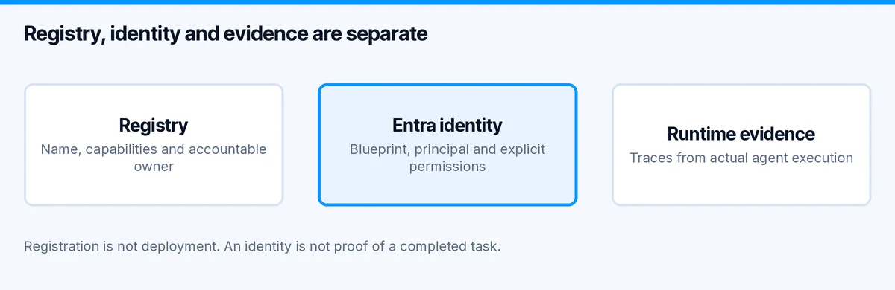
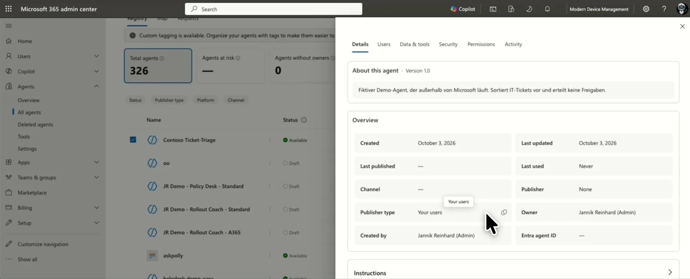
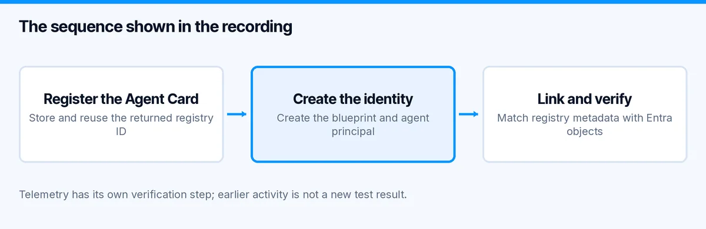

Agent 365 registration: Python and Entra walkthrough
Your agent runs outside Microsoft. Your administrators still need to know that it exists, who owns it and which identity it uses. That is the starting point for this Agent 365 registration walkthrough.
In this episode, I register a small Python-based ticket-triage demo in Microsoft Agent 365, connect its Entra identity and inspect the resulting objects in the portals. The useful part is not another agent demo. It is seeing how the registry entry, identity and activity fit togetherâand where they remain separate.
Watch the walkthrough
The video is in German and runs for about 11 minutes. These are the main sections:
- 00:49: the Agent Card and registration API;
- 01:42: the Python registration script;
- 02:55: checking the registry entry in the Microsoft 365 admin center;
- 03:58: the blueprint, agent identity and permissions;
- 07:14: creating the identity and linking it to the registry;
- 08:39: preparing telemetry and interpreting the activity view.
If you are new to the portal, start with my Microsoft Agent 365 overview. For the agent-building side, the Foundry Python walkthrough covers the preceding step.
What Agent 365 registration doesâand does not do
There are three things I want to keep separate:

The registry describes the agent: its name, capabilities, source and accountable owner. The Entra identity gives it an identity and a permission model. Runtime evidence tells us what happened when it executed.
Creating the first does not prove that the other two work. Registration does not deploy the Python application, start its process or test a tool call. It also does not, by itself, prove that every security, compliance or monitoring control is configured.
That distinction is visible in the recording. The initial registry entry exists before I link an Entra agent identity to it. Treating an entry in an inventory as a finished integration would hide that missing step.
Before you start
Use a development tenant and fictional data. In the demo, Contoso Ticket-Triage describes an external agent that sorts IT tickets. It does not approve changes or perform production remediation.
For the registration call, Microsoft currently documents AgentRegistration.ReadWrite.All for supported work or school accounts and application access. The endpoint used in the recording is POST https://graph.microsoft.com/beta/copilot/agentRegistrations. Microsoft explicitly marks this beta API as changeable and unsupported for production applications. Check the current Agent Registry API reference before copying a request.
You also need access to the relevant Agent 365 and Entra features in your tenant. Verify licensing, rollout availability, admin roles and consent before starting. A successful registry call is not a substitute for those checks.
Step 1: describe the agent with an Agent Card
The Agent Card is the small metadata document that explains what the agent is. In the recording, I inspect agent-card.json before making any changes.
I would review four parts first:
- Name and version: can an administrator distinguish this agent from the next version?
- Description and provider: is its purpose clear without a developer explaining it?
- Input, output and capabilities: do these describe the actual implementation?
- Skills and knowledge sources: what can it do, and where does its information come from?
Keep the description concrete. âSorts fictional IT tickets for a demoâ is more useful than âautonomous enterprise AI.â Do not list write capabilities that the runtime cannot perform, and do not place credentials or ticket contents in the card.
Step 2: create and verify the registry entry
The registration script shown in the video has a deliberate write switch. I inspect the planned request first, then use its --apply option to create the entry. This is a behaviour of my demo script, not a built-in Graph dry-run feature.
The script also stores the returned registration ID locally. That helps me continue with the same demo entry rather than create a new one every time. It is not a server-side idempotency guarantee. If a request times out, inspect the tenant state before repeating the create operation.

Frame from the recording: the registry entry is visible, but the agent identity field is still empty at this stage.
Check the name, description, owner and source against the intended request. Keep the returned registry ID separate from the later identity and blueprint IDs. Similar-looking GUIDs are not interchangeable.
Step 3: add the Entra identity and link the objects
The next part creates an agent identity blueprint, its blueprint principal and the individual agent identity. The registration is then linked to the corresponding identity objects. I verify the result in both the Microsoft 365 admin center and Entra.

For a new implementation, compare this direct-API demo with Microsoftâs current supported path. Its blueprint documentation now shows v1.0 identity endpoints and recommends the Microsoft 365 Agents SDK for new projects. That does not change the beta status of the separate registry endpoint used here.
I would not carry the demoâs temporary local credential into production unchanged. Prefer a suitable managed-identity or federated-credential design, keep permissions narrow and define who owns rotation and retirement. Review each permission independently: creating an identity and giving it access to business data are different decisions.
Step 4: verify telemetry as a separate test
The last section prepares an OpenTelemetry example. There is an important detail: the run at the end of the recording does not use the scriptâs --live switch. The activity already visible in the portal comes from an earlier test.
So this episode demonstrates the registration and identity work. It does not prove that the final telemetry example sent a new event successfully.
For your own test, trigger one controlled execution with fictional input. Record its timestamp and correlation identifier, then locate that same execution in the destination. Check failures as well as successes. A populated activity screen alone cannot tell you whether the run you just triggered arrived.
My checks before calling this complete
I would want evidence for each of these items:
- The registry contains the intended agent once, with the correct owner and metadata.
- The linked agent identity and blueprint match the objects in Entra.
- The runtime uses the intended identity rather than an unrelated developer credential.
- An allowed action succeeds, and an action outside its permissions fails.
- A fresh test execution can be traced through the expected telemetry destination.
- Retirement has a documented sequence for the registry entry, runtime, credentials and identity objects.
These are acceptance checks to perform, not a claim that this short video validates a production deployment.
Frequently asked questions
Can an agent hosted outside Microsoft appear in Agent 365?
That is the scenario demonstrated here: an external demo agent receives a registry entry and a linked Entra identity. Its hosting and execution remain separate from that entry.
Is registration the same as creating a Foundry agent?
No. Creating the application or Foundry agent gives you a runtime implementation. Agent 365 registration makes its metadata available to administrators. Connecting identity and telemetry requires further work.
Should I copy the recorded API versions unchanged?
No. Check the linked references and your tenant before running the demo. The registry and identity APIs have separate version and availability considerations.
The practical takeaway
For me, the useful outcome is an agent that administrators can identify and connect to its real executionânot merely another row in a portal. Start with a clear Agent Card, verify the identity link and prove one fresh execution before you expand the integration.
Stay healthy, Cheers Jannik